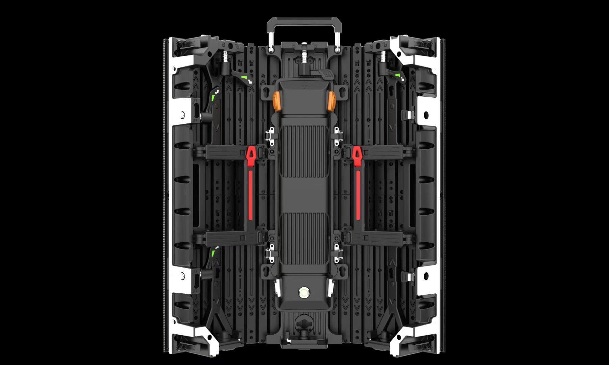

By Cassie
What does a Mongolia LED display importer need to know? Importing LED displays into Mongolia means moving cargo by rail from the Chinese port of Tianjin through Zamyn-Uud, holding a conformity certificate issued under the MASM standards system, and specifying equipment for one of the coldest capital cities in the world. This 2026 guide explains the process.
Mongolia is a landlocked market of just over three million people with a mining-driven economy and a rapidly modernising capital. Demand for LED displays comes from retail, banking, telecoms, hospitality, mining offices, government, and events, and essentially every professional screen is imported from China or Korea.
A Mongolia LED display importer who arranges the rail transit and the conformity certificate before dispatch avoids the two delays that most often stall a project: a consignment held at the border and a specification that cannot start in a minus thirty degree winter.
Mongolia has no seaport. Almost all containerised cargo moves by sea to the Chinese port of Tianjin, then by rail to Erenhot and across the border at Zamyn-Uud, continuing on the Trans-Mongolian line to Ulaanbaatar. A smaller share of freight arrives from Russia across the northern border at Altanbulag near Kyakhta on the Trans-Siberian route.
The importer must be a registered legal entity with the state registration authority and hold a tax registration number before a declaration can be filed with the General Customs Administration of Mongolia. Entries are submitted electronically through the national customs system, and a licensed broker usually files them.
| Step | What Is Required | Who Handles It |
|---|---|---|
| Entity and tax registration | State registration and tax number | Importer |
| Importer registration | Registration with the General Customs Administration | Importer |
| Conformity certificate | Certificate for goods on the regulated list | Supplier, arranged with the importer |
| Transit through China | Rail booking and transit documents from Tianjin | Forwarder |
| Import declaration | Electronic entry at Zamyn-Uud or Altanbulag | Importer or broker |
| Duty and VAT | Assessed on the customs value | Importer |
Confirm the transshipment arrangements in writing before the goods leave Shenzhen. The sea leg to Tianjin, the rail booking on the Mongolian corridor, and the border crossing are handled by different parties, and a gap between them leaves the container sitting in a Chinese yard at the importer's cost.
Mongolia develops its national standards through the Mongolian Agency for Standardization and Metrology, known as MASM, which issues standards under the MNS designation. Goods on the regulated list must hold a certificate of conformity before they can be released for the Mongolian market, and the certificate is issued by bodies accredited for that purpose.
MNS standards are frequently aligned with international standards, so test reports prepared for other markets often support the Mongolian file. Even so, the certificate must name the exact model and the shipment, and the importer should hold the complete technical file after delivery.
| Requirement | What It Covers | Evidence to Hold |
|---|---|---|
| Certificate of conformity | Product conformity for Mongolia | Certificate naming the offered model |
| Safety test report | Electrical safety | Report naming the offered model |
| EMC test report | Electromagnetic compatibility | EMC test report |
| Technical file | Drawings and specifications | Complete file held by the importer |
| Mongolian labelling | Product information for the market | Label artwork agreed with the supplier |
| Model identification | Exact model supplied | Photographs and model data |
Confirm the conformity requirement for the specific product before the order is placed, because the scope of the regulated list depends on the goods and their use. A private indoor installation and a public outdoor screen may be treated differently.
Mongolia applies a low and comparatively simple import regime. Most imported goods attract a flat duty rate, and value added tax is charged on the duty-paid value at a rate well below the regional average. The charges that catch buyers out are the logistics ones, not the taxes.
| Cost Element | Basis | Notes |
|---|---|---|
| Customs duty | Flat rate on the customs value for most goods | Confirm the rate for the commodity code |
| Value added tax | Value plus duty | Standard rate applies on import |
| Conformity certification | Per product or per shipment | Budget for the processing time |
| Rail and transshipment | Per container from Tianjin | Watch the free storage period in Tianjin |
| Broker fee | Per declaration | Varies by broker and volume |
| Inland transport | By distance from the border | Confirm delivery to site |
Value added tax is recoverable for a registered business, so the effect is on cash flow rather than on final cost. Duty, the certification charge, and the rail costs are not recoverable and belong in the cost calculation from the beginning.
Model the landed cost before comparing suppliers, because on a landlocked route the freight and handling between Tianjin and the site can be a significant fraction of the invoice value of a display order.
Importers work through a licensed broker rather than filing directly. Choose one who regularly handles the Zamyn-Uud corridor and electronic goods, because the classification of a display, its power supplies, its control hardware, and its mounting steel differs and each line carries its own treatment.
Give the broker the complete document pack before the container is loaded for rail. A consignment that reaches the border with incomplete paperwork is held while the gap is filled, and storage charges accumulate for every day the wagon waits.
Confirm the consignee details on the rail waybill and the bill of lading against the importer of record. On a route with a change of mode in China, a mismatch between the transport documents and the declaration is a common cause of delay.
Mongolia has an extreme continental climate. Ulaanbaatar is the coldest capital city in the world, with winter temperatures near minus thirty and lower at night, while summer days reach thirty degrees. Diurnal swings are large, spring brings dust storms, and the steppe wind is constant.
For Mongolian sites, low winter temperatures make cabinet construction and sealing the deciding factors — the X Series uses standard 500×500mm cabinets with front/rear service, and the COB EF outdoor series is sealed against snow-melt and moisture ingress.
| Condition | Risk | Specification Response |
|---|---|---|
| Severe winter cold | Power supplies and drivers outside their range | Low-temperature rated components and a heater option |
| Very large day to night swing | Condensation and thermal stress | Enclosure design and conformal coating |
| Spring dust storms | Blocked cooling paths and abrasion | Filtration and a cleaning schedule |
| Strong steppe wind | Structural and mounting load | Wind-load calculation for the support structure |
| Summer heat and high UV | Fading and thermal stress | UV-stable materials and derating plan |
| Grid quality in remote sites | Voltage variation and outages | Wide-input supplies and surge protection |
Confirm the cold-start figure rather than only the running range, and ask what heating or insulation the cabinet uses. In Ulaanbaatar a screen that runs at low temperature may still refuse to start after a winter night, and the fix cannot wait for the next container.
Most LED display cargo leaves Shenzhen by sea for Tianjin, is transshipped to rail at Erenhot, and crosses at Zamyn-Uud before travelling on to Ulaanbaatar. The Mongolian rail gauge differs from the Chinese gauge, so wagons are transferred at the border, which adds time. Air freight reaches Chinggis Khaan International Airport and is reserved for urgent spare parts.
| Stage | Typical Duration | What Can Delay It |
|---|---|---|
| Production | 15 to 25 working days | Component availability and queue |
| Sea leg to Tianjin | 3 to 7 days | Booking and carrier schedule |
| Rail to the border | 3 to 5 days | Rail capacity and yard congestion |
| Gauge transfer and clearance | 2 to 5 days | Border queues and document checks |
| Rail to Ulaanbaatar | 2 to 4 days | Wagon availability |
| Total | Approximately 6 to 9 weeks | Add a substantial buffer |
Add a buffer of at least three weeks if the screen is tied to a fixed opening date. The route has three handovers, and a delay at any one of them pushes the delivery into the next rail slot rather than the next day.
Ask every candidate the same questions and record the answers. For Mongolian projects the cold-weather specification, the conformity certificate, and the packing for a long rail journey matter as much as the price.
| Question | What a Strong Answer Looks Like | Warning Sign |
|---|---|---|
| Cold-weather rating | Stated operating and cold-start range | Not specified |
| Heating provision | Heater or insulation offered for outdoor cabinets | Question avoided |
| Conformity support | Certificate arranged for the shipment | Certificate promised after dispatch |
| Power supply | Named brand and wide input range | Brand only, no part number |
| Packaging for rail | Crating method described for a long rail leg | Not addressed |
| Spare parts availability | Stated period in writing | No commitment given |
Confirm the components in writing and require written approval for any substitution. A supplier facing a component shortage may change a part quietly, and the change only appears when the screens arrive in Ulaanbaatar.
Each mistake is inexpensive to avoid during planning and costly after the goods land. A Mongolia LED display importer who books the rail leg early, confirms the conformity route, and specifies for the cold avoids most of them.
Asia Vision Technology manufactures LED displays in Shenzhen and supplies importers, distributors, and contractors across Central Asia and Mongolia. The factory prepares the test documentation needed for a MASM conformity certificate, builds cabinets with low-temperature components and heater options where the site requires them, and holds spare parts for the stated warranty period.
For Mongolian projects the company supplies rental cabinets for events, fine pitch screens for retail and corporate work, and outdoor displays rated for extreme cold, dust, and wind load. OEM and ODM production is available for distributors building their own range.
